상품 40참고·호환 상품
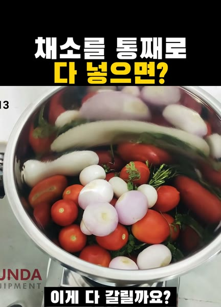
채소를 통째로 다 넣으면??
대형 분쇄 업소용 믹서(10L·18L 옵션)
상품 보러 가기영상 속 제품과의 차이 확인
영상은 인도 chamunda 10리터 2HP 믹서 그라인더(판매처 표기 32kg)이고, 이 상품은 브랜드·출력·구조가 다른 참고 상품입니다.
쿠팡 링크는 쿠팡 파트너스 활동의 일환으로, 이에 따른 일정액의 수수료를 제공받습니다.
방금 본 영상, 여기서 찾으세요.
영상 썸네일을 누르거나 상품 번호를 검색하세요.

채소를 통째로 다 넣으면??
영상은 인도 chamunda 10리터 2HP 믹서 그라인더(판매처 표기 32kg)이고, 이 상품은 브랜드·출력·구조가 다른 참고 상품입니다.
하이라이터로만 풀메이크업 하면??
영상 속 여러 하이라이터와 브랜드·제형·색이 다르며 같은 SKU가 아닙니다.
구강세정기 물이 왜 튈까요?
영상 기기는 브랜드가 확인되지 않는 흰색 무선 구강세정기로 같은 SKU가 아닙니다. 켜는 순서·잇몸선 조준은 기기와 무관한 사용법입니다.
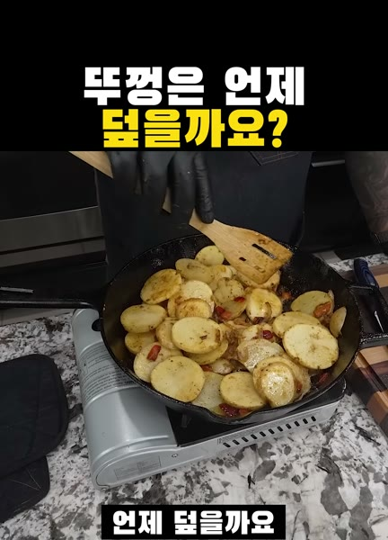
뚜껑은 언제 덮을까요?
영상은 양손 손잡이 대형 검은 무쇠 스킬렛이다. 검색된 상품은 롯지 L8SK3 26cm이며 화면에 로고와 인치가 없어 같은 SKU인지 확인하지 않았다. 유리 뚜껑은 포함되지 않는다.
눈금 위로 채우면 어떻게 될까요?
영상은 소다스트림 크리스탈형 유리병 기계다. 검색된 상품은 화이트 Jet Pastel이며 색·병 재질·실린더가 같은지 확인하지 않았다. 같은 SKU가 아니다.
한 번만 뿌리면 갈색은 어떨까요?
영상에는 바티스트 여러 향과 어두운 머리용 캔이 나온다. 검색된 상품은 후레쉬이며 영상 속 어두운 머리용과 같은 캔·같은 SKU가 아니다.
전동칫솔은 왜 비스듬히 댈까요
영상은 소닉케어 DiamondClean 사용법이고 연결 상품은 소닉케어 5300입니다. 모델·구성이 다르며 같은 SKU가 아닙니다.
베트남 컵라면 4개는 뭐가 다를까요
영상은 Modern 즉석면 4종이고 연결 상품은 LC FOODS 베트남 쌀국수 라면입니다. 브랜드·맛·면 종류가 다르며 같은 SKU가 아닙니다.
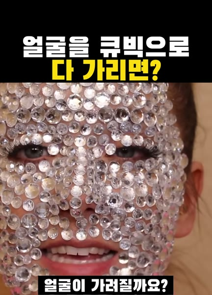
얼굴을 큐빅으로 다 가리면?
영상은 낱개 큐빅과 별도 접착제를 사용하고 연결 상품은 얼굴용 큐빅 스티커입니다. 같은 제품·부착 방식이 아닙니다.
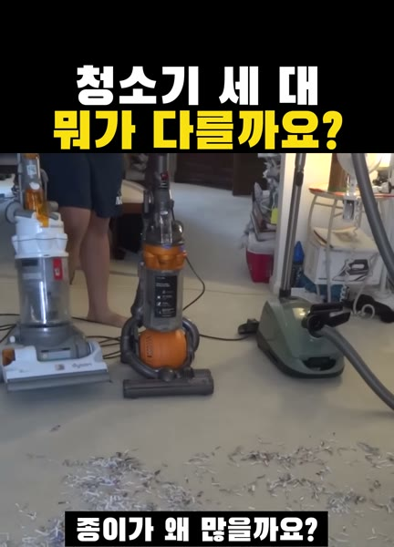
바닥에 종이는 왜 많을까요
영상은 밀레 캐니스터와 바닥 헤드다. 제목의 S6·헤드 AIRTEQ와 쿠팡 Boost CX1은 같은 모델이 아니다. 다이슨 스틱은 연결하지 않았다.
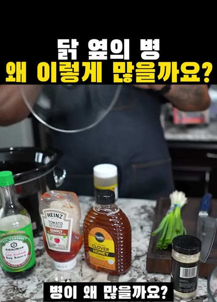
닭 옆 병은 왜 많을까요
영상 냄비는 크로크팟이다. 쿠팡 키친아트 3.2와 같은 전기 슬로우쿠커 계열이고 브랜드·용량은 다르다.
왜 금발 붙임머리를 샀을까요
영상은 테이프 가닥을 머리에 붙인다. 쿠팡 유로헤어 10피스와 같은 붙임머리 계열이고 브랜드·색·피스 수는 같지 않다.
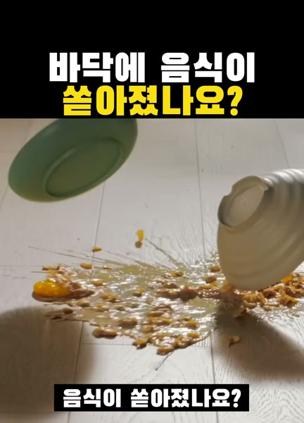
바닥에 음식이 쏟아졌나요?
영상 화면은 S7 프로입니다. 쿠팡 후보는 접이식 S7 FOLD 제품군이며 같은 SKU는 아닙니다.
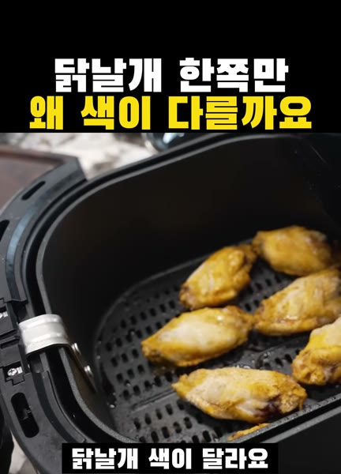
닭날개 한쪽만 왜 색이 다를까요
영상은 미국 필립스 에어프라이어 사용 장면입니다. 쿠팡 후보는 2000 시리즈 4.2L 제품군이며 NA220과 같은 SKU는 아닙니다.
드라이어 노즐 빠졌나요?
영상은 콘센트레이터 노즐과 원형 브러시 사용 장면입니다. 쿠팡 후보는 같은 원형 브러시 제품군이며 영상 속 모델과 같은 SKU는 아닙니다.
손설거지 다음엔 무엇이 나올까요
원본은 LG 알제리 식기세척기 사용 장면이며 연결 상품은 국내 판매 LG 식기세척기 제품군입니다. 같은 SKU가 아닙니다.
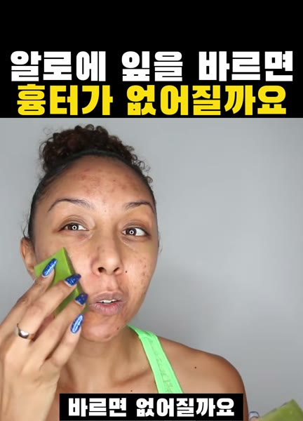
알로에 잎을 바르면 흉터가 없어질까요
영상은 미국 마트의 큰 생알로에 잎이다. 쿠팡은 국내 생잎 계열이며 같은 농장·같은 잎이 아니고 얼굴용인지는 확인하지 않았다. 튜브 수딩 젤은 연결하지 않는다.
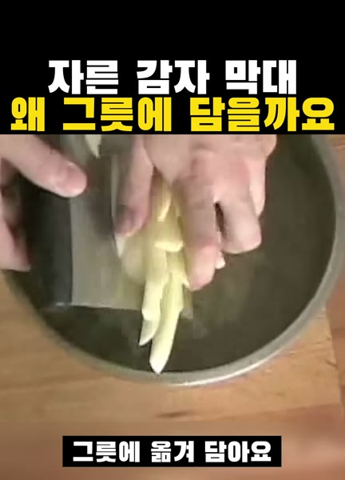
자른 감자 막대 왜 그릇에 담을까요
영상은 파란 와이자 필러다. 쿠팡은 Y형 감자칼 계열이며 날 곡률과 브랜드는 같고 같은 SKU는 아니다. 영상 속 식칼은 연결하지 않는다.
빨간 냄비에서 재료가 튀겨져요
영상은 여러 색의 르크루제 무쇠 냄비다. 연결 상품은 국내 판매 르크루제 원형 냄비 계열이다. 색·지름·한국 모델이 같은지 확인하지 않았고 같은 SKU가 아니다.
셀프 파마는 곱슬로 남을까요?
영상은 로드와 용액으로 하는 셀프 파마다. 연결 상품은 다나미 무알카리 셀프파마세트 계열이다. 브랜드와 향은 확인하지 않았고 같은 SKU가 아니다.
제빵기가 식빵을 구워 냈어요
영상은 브랜드를 밝히지 않은 프랑스 가정용 제빵기이고 바닥 반죽 축이 두 개다. 연결 상품은 위즈웰 듀얼 반죽 제빵기 계열이다. 브랜드·용량·시간은 다르며 같은 SKU가 아니다.

달걀을 물에 안 담가도 정말 익을까요?
영상은 Instant Pot 계열 압력 멀티쿠커이며, 연결 상품도 같은 제품군입니다. 영상 속 정확한 모델과 판매 상품의 모델·용량은 같다고 단정하지 않습니다.

집에서 한 속눈썹펌 생각보다 어렵네요
영상 키트는 ICONSIGN LASH LIFT다. 쿠팡 상품은 클리오네 셀프 속눈썹펌 세트라 같은 제품군이고 같은 SKU는 아니다.
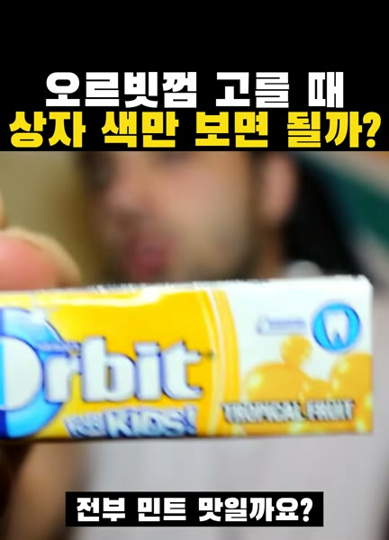
오르빗껌 고를 때 상자 색만 보면 될까?
영상은 여러 맛의 Orbit 팩을 보여 준다. 쿠팡 후보는 페퍼민트·스피어민트·윈터민트 벌크라 같은 브랜드 제품군이다. 화면의 수박 맛과 같은 SKU는 아니다.
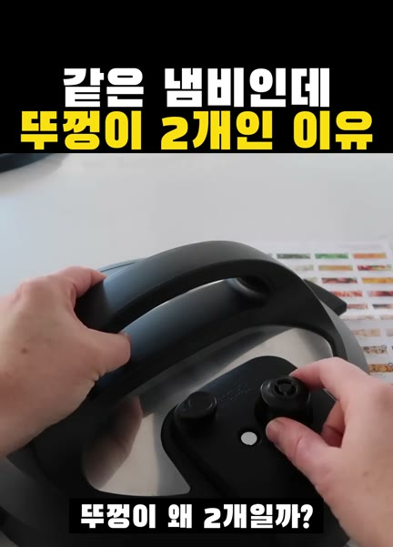
같은 냄비인데 뚜껑이 2개인 이유
영상과 같은 듀오 크리스프 제품군이며 용량과 세부 모델은 판매 페이지에서 확인해야 합니다.

머리 엉켰을 때 이 빗부터 쓰지 마요
영상은 용도별 헤어브러시 선택법이며 링크는 같은 제품군의 젖은 머리용 디탱글 브러시입니다.
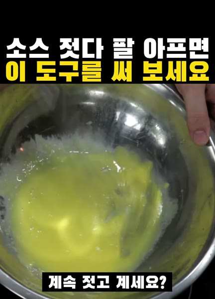
소스 젓다 팔 아프면 이 도구를 써 보세요
영상은 핸드블렌더 조리법이며 링크는 같은 제품군의 국내 판매 핸드블렌더입니다.

고데기 없이 자면서 컬 만드는 법 11가지, 1등은??
자면서 감아 쓰는 무열 헤어롤로 영상 속 컬링 헤어밴드와 같은 용도의 제품이며 원본 사용 제품과 동일하다고 확인된 제품은 아닙니다.

전동칫솔 이렇게 쓰면 잇몸 다 망가져요
압력 센서가 있는 전동칫솔 참고 상품이며 영상 속 사용 제품과 같은 모델은 아닙니다.

세숫대야만 한 초대형 초코파이 먹방, 생크림 찍어 먹으면??
영상 속 초대형 초코파이는 일본 롯데 한정판이라 쿠팡에서 판매하지 않으며, 국내 롯데웰푸드 일반 초코파이입니다.

셀프 아크릴 네일, 혼자 해보면 생기는 일
셀프 네일 대안으로 참고할 수 있는 붙이는 네일팁이며 영상 속 사용 제품과 동일하다고 확인된 제품은 아닙니다.

틱톡에서 난리 난 드라이기 브러시, 헤어 디자이너가 써보니??
영상과 같은 레브론 원스텝 볼류마이저 제품군이며 해외 판매처 상품일 수 있습니다. 판매처·배송 조건과 전압을 확인하세요.

텀블러 안에 맥주병? 이 얼음이 포인트예요
영상과 같은 용도의 원통 얼음틀 호환품이며 원본 제품의 제조사는 확인되지 않았습니다. 텀블러 용량·치수를 확인하세요.

핵불닭 2배 매운맛, 외국인 셋이 먹어보니??
2배 매운맛 봉지 제품입니다. 구매 구성·수량은 영상과 다를 수 있습니다.
블러셔를 볼 말고 귀에도 바른다고요?
화장법에 활용할 수 있는 참고 상품이며 영상 속 사용 브랜드·색상과 동일하다고 확인된 제품은 아닙니다.
다이슨 무선 고데기 편하다는 말 뒤에는?
쿠팡에서 해당 모델의 유효한 상품 링크를 확보하지 못해 제조사 공식 안내를 연결했습니다. 구매 가능 여부·재고는 공식 판매처에서 확인하세요.

스탠리 텀블러의 치명적인 단점??
영상과 같은 용도의 호환품이며 원본 사용 제품의 제조사는 확인되지 않았습니다. 텀블러 모델·크기 호환을 확인하세요.

얼굴이 쫙 당겨지는 30분 마스크의 결과는??
영상에 소개된 브랜드·제품군의 판매 상품입니다. 판매 구성과 배송 조건을 확인하세요.

일본 대식가 아이돌이 세숫대야 까르보불닭을??
같은 제품군이며 구매 묶음 수량은 영상과 다를 수 있습니다.
번호를 다시 확인하거나 상품 이름으로 찾아보세요.